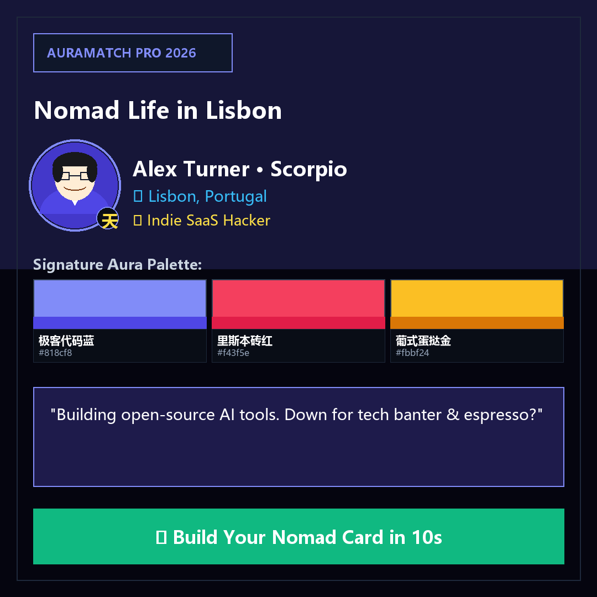
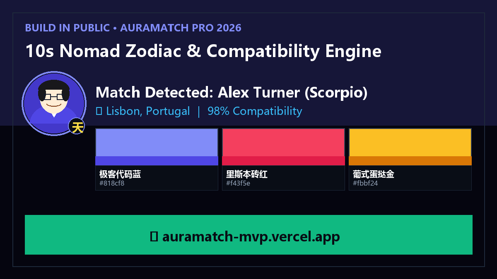

POV: How to make nomad friends in Lisbon without the awkward small talk ✨☕
Tested with Alex Turner (Scorpio) — 98% Compatibility!
Aura Palette: Cyber Indigo & Lisbon Rooftop
AuraMatch Pro generates native local icebreakers in 8 languages.
👉 Link in bio to test your nomad card (100% free web app)
#digitalnomad #remotework #solotraveler #indiehacker #lisbon #buildinpublic
【💯 满分发帖动作 (算法要求)】：
1. 上传本文件夹中的【Instagram_专属方形视觉卡.png】；
2. 复制下方文案直接发布。
【说明文案】：
Working remotely from Lisbon hits different when you actually find your tribe across cultural lines. ✨☕
Meet Alex Turner (Scorpio) — Indie SaaS Hacker based in Lisbon, Portugal.
⚡ 98% Cross-Culture Affinity on AuraMatch Pro
🎨 Signature Palette: Cyber Indigo
💬 "Building open-source AI tools. Down for tech banter & espresso?"
AuraMatch Pro automatically analyzes nomad vibes, calculates zodiac compatibility, and generates native openers across 8 languages.
👉 Create your 10s Nomad Profile via link in bio!
#digitalnomad #remotework #solotraveler #indiehacker #lisbon #buildinpublic

🐦 4. Twitter / X (专区：03_推特_Twitter_X) 含极客横版视觉卡
【💯 满分发帖动作 (算法要求)】：
1. 保持第一人称开发者叙事，切勿修改为生硬广告词；
2. 搭配本文件夹中的【Twitter_极客横版视觉卡.png】一起发布以获得最大曝光！
【推文内容】：
Solo traveling as a remote founder is 80% freedom and 20% staring at your laptop screen wondering how to talk to the person at the next table without being weird.
So I spent 48 hours building AuraMatch Pro 🌍
⚡ 98% Cross-Cultural & Zodiac Affinity Score
🎨 Nomad Aura Color Palettes + Vibe Archetypes
🗣️ AI Icebreakers with native local slang across 8 languages
💬 Live in-app practice sandbox before you talk IRL
Matched with Alex Turner (Scorpio · Indie SaaS Hacker) in Lisbon, Portugal.
Zero clutter. Instant Tinder speed:
👉 https://auramatch-mvp.vercel.app #buildinpublic #indiehackers #digitalnomad

📌 5. Reddit (专区：04_论坛_Reddit_Community)
【💯 满分发帖动作 (算法要求)】：
1. 发在 r/digitalnomad 或 r/solotravel；
2. 严禁改写成硬广推销，保持第一人称真诚踩坑故事。
Title: Why is it so weirdly difficult to break the ice with other nomads in cafes? (Built a tiny tool to fix it)
Hey everyone,
I've been traveling and working remotely across hubs like Lisbon, Portugal, Bali, and Lisbon.
One recurring pain point:
You walk into a buzzing coworking cafe. There are 20 other creative people on MacBooks. Everyone looks cool, but 95% of us sit behind noise-canceling headphones, actively avoiding eye contact because opening with "Nice weather today, huh?" feels super cringe.
Language barriers and not knowing someone's vibe make cold approaching awkward as hell.
Last weekend, I built a lightweight web deck called AuraMatch Pro (https://auramatch-mvp.vercel.app) to test a concept:
1. Zodiac & Vibe Alignment: Matches nomad archetypes (Indie SaaS Hacker) and calculates Aura color palettes.
2. Local AI Icebreakers: Generates context-aware, native openers across 8 languages with local cultural nuance.
3. In-App Practice Sandbox: Simulate the conversation before saying hi IRL.
4. 100% Free & No Clutter: Instant web app, no 15-step onboarding, zero ads.
Would love your honest feedback on whether this actually makes cafe connections less awkward!
Show IH: AuraMatch Pro – 10s Zodiac compatibility, Aura Palettes & native icebreakers for global nomads
Hey builders,
As a solo developer traveling across global hubs, I noticed how isolated remote workers can be in cafes despite being in the same room.
I launched AuraMatch Pro:
- Tech Stack: React + TypeScript + Supabase + Vercel
- Core Value: 10s Nomad Profile Builder + Zodiac & Lifestyle Affinity + Nomad Aura Palettes + Native AI Icebreakers in 8 languages
- Live Demo: https://auramatch-mvp.vercel.app
Would love your feedback on the UX and onboarding flow!